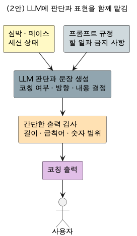

DP2. 제어가능성 — 인증 보고서 "03. 설계 / Architectural Decision" 원고
인증과제 샘플(씬스틸러) DP 형식 3장 + Appendix 1장 — 2026-07-31 v1 — 정본: arch/dp/dp-02-controllability/-decision.md, 원고: report/report-009
| (1안) 규칙 확정 + LLM 표현 한정 아키텍처채택 | (2안) LLM 판단 위임 아키텍처 | |
|---|---|---|
| 한 줄 소개 |
무엇을 권할지는 규칙이 정하고, LLM은 문장을 만드는 일만 맡는 구조 | 관측 상황을 통째로 주고 LLM이 코칭 내용까지 직접 판단해 만드는 구조 |
| 구조 |
 규칙이 방향과 사실 숫자를 확정하면 LLM은 그 재료로 문장만 만든다. 나온 문장은 형식, 방향, 숫자 세 가지 검사를 거치고, 걸리거나 LLM이 실패하면 "속도 줄이기" 같은 짧은 문구로 바꿔 내보낸다. 위험 심박 권고는 LLM을 거치지 않고, 모든 호출의 경로와 기각 사유가 기록된다 |
 심박, 페이스 같은 상황을 프롬프트로 주면 LLM이 무엇을 권할지까지 스스로 판단해 문장을 만든다. 통제는 프롬프트에 규정을 써 두고 출력에 금칙어, 수치 범위 필터를 거는 방식이다. LLM 활용 서비스의 주류 접근이다 |
| 장점 |
제어가능성 ★★★★★ 강건성 ★★★★★ |
기능적응성 ★★★★ 기능정확성 ★★★ |
| 단점 |
기능적응성 ★★★ 수행효율성 ★★★★ |
제어가능성 ★★ 강건성 ★★ |
| Trade Off |
어긋난 문장은 걸러지고 실패해도 코칭이 이어진다. 대신 코칭 내용의 자유도에 상한이 있다 | 문맥이 풍부한 코칭이 나올 수 있다. 대신 통제가 "LLM이 규정을 따라 준다"는 기대에 의존하고, 실패하면 갈아탈 판단 주체가 없다 |
과제 소개 요구사항 설계 구현/검증 결론